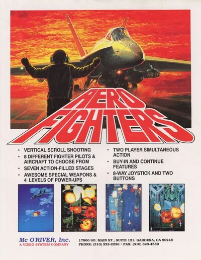

FBA (FinalBurn Alpha)
Aero Fighters
- Año: 1992
- Desarrollador: Video System Co.
- Género: Disparos / Vuelo vertical
- Jugadores: 2 jugadores
Aero Fighters es un juego de arcade, de disparos y de scroll vertical, lanzado en 1992 por Video System. El juego posteriormente fue incorporado al catálogo de Super Famicom en 1993 y al de Super Nintendo en 1994. Se hicieron, además, dos secuelas para la consola Neo Geo, una para PlayStation y Sega Saturn (ambas sólo en Japón) y una última, en 3-D, para Nintendo 64.
Al empezar, el jugador escoge una de cuatro nacionalidades (EE. UU., Japón, Inglaterra, o Suecia), y luego vuela por siete territorios enemigos, destruyendo y disparando a grandes cantidades de enemigos, para luego, al final de cada nivel, enfrentar al Jefe correspondiente.
El jugador uno sólo puede jugar con un número limitado de aviones (los que corresponden única y exclusivamente al control 1). Estos aviones son el F/A-18, el FS-X, el AV-8B, y el AJ-37. Si un segundo jugador se une a la partida, éste podrá elegir los aviones sólo selecciobables para el segundo mando, pero con la nacionalidad escogida previamente por el jugador uno. Estos aviones son el F-14, el F-15, el JAS-39 y el Tornado IDS. Cabe señalar que la restricción de nacionalidad fue eliminada en Aero Fighters 2.
PESONAJES - Blaster Keaton (F/A-18 Hornet) - Keith Bishop (F-14 Tomcat) - Hi En (FSX) - Mao Mao (F-15 Eagle) - Kohful The Viking (JAS-39) - Tee-Bee 10 (AJ-37) - Lord River N. White (Tornado IDS) - Villiam Syd Pride (AV-8) - Rabio (Oculto) Lepus para Player 2. Para desbloquear: [sostener R y entrar la sequencia left,down,right, X,Y,A,B, left,down,right,down, X, Y,A,B]
Controles
Dos botones.
| Panel | Juego |
|---|---|
 | Botón 1 |
 | Botón 2 |
  | Empezar |
 | Meter una moneda |
+  | Salir del juego |
El panel en FBA (FinalBurn Alpha)

Longplay

Partida completa de la recreativa (30 min), de World-of-Longplays: Arcade Longplay [383] Aero Fighters.